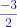
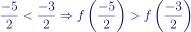
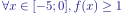
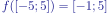

Question 1
a =  et b =

appartiennent tous deux à l'intervalle I=[-5;-1] avec a < b.
La fonction f est monotone sur cet intervalle donc on peut comparer a et b
De plus, puisque f est strictement décroissante sur cet intervalle alors: 
Question 2
On ne peut pas comparer les images de 0 et 3 car la fonction f n'est pas monotone sur l'intervalle [0;3]
Question 3a
FAUX!
Sur l'intervalle [2;4], la fonction f est strictement décroissante.
Par conséquent, pour tout a et tout b appartenant à cet intervalle, a < b entraîne f(a) > f(b)
Question 3b
VRAI!
Sur l'intervalle [-5;0], d'après le tableau de variations, la fonction f admet un minimum en -1 qui vaut 1
Par conséquent, 
Question 3c
FAUX!

Or, l'intervalle [-1;0] est inclus dans l'ensemble image.
Par conséquent, il n'existe pas un unique nombre réel négatif